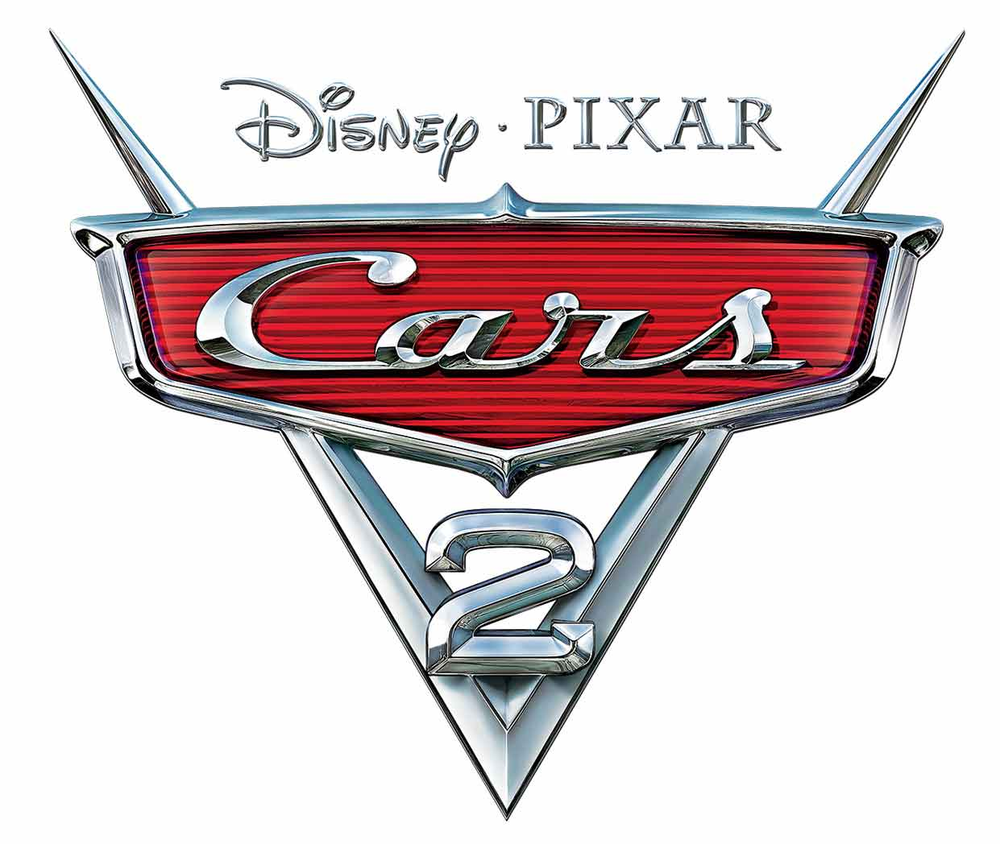

The film begins with a red British car named Leland Turbo transmitting a warning via video to British spy car Finn McMissile. Later, Finn, with help from a boat named Crabby, sneaks onto an oil platform to find that evil scientist Professor Z is in command of suspicious operations. Finn is shortly discovered, and is forced to escape without getting enough info about the Professor's schemes.